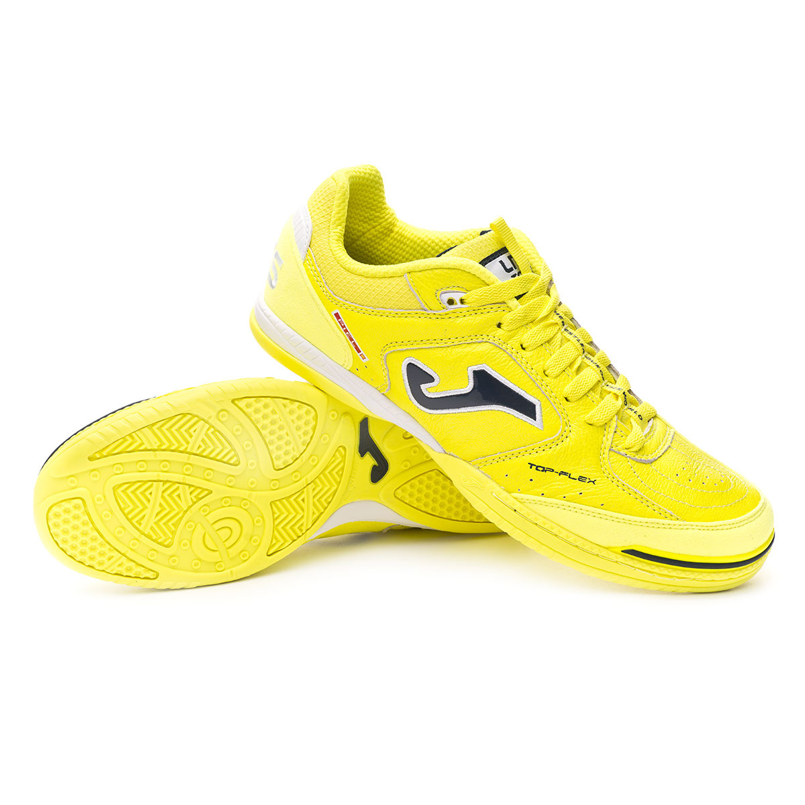

Joma Top Flex |
Información:Su corte realizado en piel unido a la capa protectora que incorpora en la zona delantera y lateral interna la hacen muy cómoda y resistente. Su alto grado de flexibilidad y su ligereza son sus caratas de presentación En su diseño se observa las líneas de flexión para facilitar apoyos y las ranuras en forma de espigón para un buen agarre La suela cosida al corte y con doble pegado en la base es una garantía de durabilidad. Realizada con Phylon y caucho la hacen muy flexible, además incorpora caucho seccionado mas ligero en las zonas de apoyo ofreciendo así un mejor agarre Por los materiales con los que esta fabricada es una zapatilla apta para pistas de interior (indoor) y de superficie poco abrasiva Precio: |
|---|